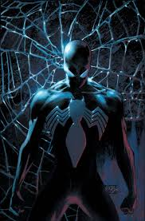
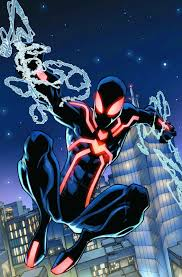
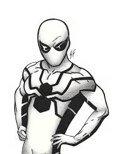
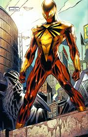

Symbiote Suit

During the Secret Wars, Spider-Man's costume was torn during battle and he was sent to a machine that would repair it. Unknown to Spider-Man, the machine was actually a prison that contained an alien symbiote, which copied Spider-Man's thoughts about the costume worn by Spider-Woman, and created a duplicate of it.
Stealth Suit

Spider-Man created this suit to combat the Hobgoblin's sonic screams; the suit warps light and sound around it, rendering it invisible. It was later used by Kaine to defeat Spider-Queen. The costume's new color was a consequence of the suit being locked in that design, which was made on purpose by Madame Web, who wanted it changed for what the Scarlet Spider (Ben Reilly) meant in Kaine's past. Originally Kaine could not make the suit change colors until he concentrated hard enough to change it back to its original colors.
Future Foundation Suit

This suit was created for Spider-Man when he joined the Future Foundation following the death of the Human Torch. It is made from Unstable Molecules, thus it can repair itself, never get dirty, and change its appearance
Iron Spider Suit

Before the events of the Superhuman Civil War, Tony Stark fabricated a new red and gold costume for Peter, utilizing much of the same technology used for his Iron Man suit, with the main difference being the suit's mesh-like quality. This new suit provided Peter with advantages he never had before in other costumes, such as radio transmission scanners and receivers, multiple biological sensors for himself and others (such as EKG readings, pulse rates, etc.), multiple vision settings, deflection of small caliber firearms, enhanced strength and limited gliding capabilities. The Iron Spider costume also provided Peter with three retractable pseudo-arms, named waldoes, though they weren't ideal for fighting. If Peter ever felt that he would like a change of pace in his appearance, Stark also built in a feature for the costume to change its appearance at Peter's will. This was an ideal feature for Peter because he never had to worry about trying to hide his suit in public.
For more suits.